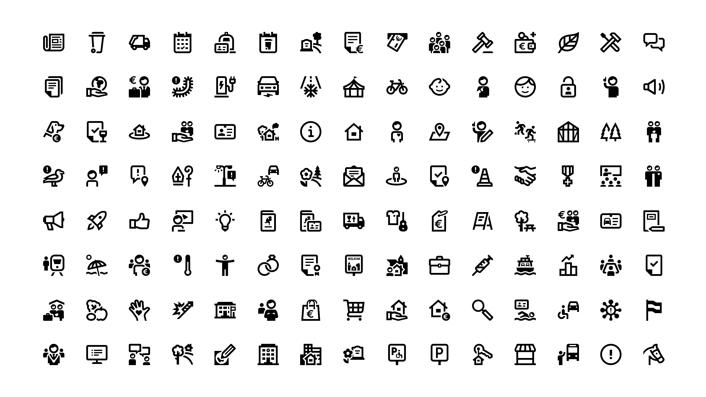
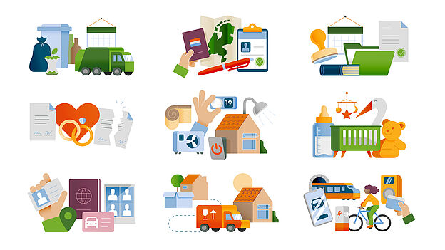

Wat zoek je?
Kies wat je nodig hebt voor je gemeentelijke website.

Iconen
Duidelijke en consistente iconen voor veelgebruikte gemeentelijke onderwerpen en diensten.
Bekijk iconenarrow_forward
Illustraties
Illustraties voor uitleg en communicatie, aanpasbaar aan de huisstijl van je organisatie.
Bekijk illustratiesarrow_forwardWaarom gemeenteniconen?
Samen werken aan duidelijke, toegankelijke en herbruikbare digitale dienstverlening.
accessibility
Toegankelijk
Duidelijk en bruikbaar voor zoveel mogelijk inwoners.
code
Open source
Vrij te gebruiken, aan te passen en te delen.
handshake
Samenwerken
Ontwikkeld samen met gemeenten en de publieke sector.
verified
Betrouwbaar
Consistente beeldtaal voor gemeentelijke dienstverlening.